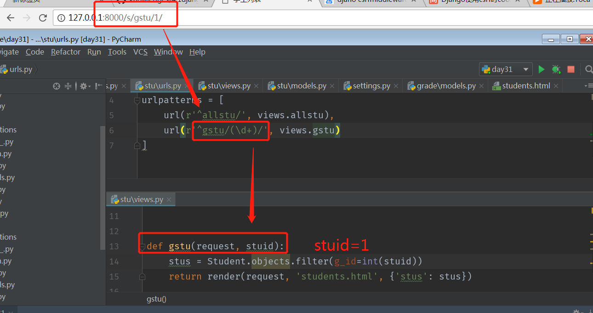

Django – 视图
MVT模式中的V，V代表视图，在Django中的视图主要用来接受web请求，并做出响应。视图的本质就是一个python中的函数 视图的响应分为：以json数据形式返回、以网页的形式返回、重定向到另一个网页、错误视图页面（404,500等）。视图响应的过程：浏览器输入 → django获取信息并去掉ip：端口，身下路径 → urls路由匹配 → 视图响应 → 回馈到浏览器。
url配置
配置流程
1 | settings中制定根级url配置文件，对应的属性ROOT_URLCONF |
urlpatterns
1 | 一个url实例的对象，全在根配置搞定 |
导入其他的url配置
1 | 在应用中创建urls.py 文件，编写配置规则，在工程urls.py中进行 |
获取url路径的参数
url传递一个参数
1 | 果需要从url中获取一个值，需要对正则加小括号 |

django_views1
url传递多个参数
1 | 如果需要获取url路径中的多个参数，那就添加多个括号，默认按照顺序匹配路径名字，参数顺序必须固定 |
例子：查找计算机技术书籍下的脚本语言中的python的书籍信息

使用关键词获取参数
参数也可以使用关键字参数形式,参数顺序可以任意 url(r'news/(?P\d{4})/(?P\d+)/(?P\d+)$', views.getNews)

django_views3
反向解析
在模板中进行反解析
使用关键字参数
1 | {% 'url' 'namespace:name' key=value key1=value1 %} |
定义url
在根urls中
1 | url(r'^apps/', include('App.urls', namespace='app')) |
在子urls中
1 | url(r'^hello/(\d+)', views.hello, name='sayhello') |
在模板中使用:
1 | <a href='{% url 'app:sayhello' grade_id%}'> |
其中grade_id是参数，其中参数可以使用位置参数，也可以使用关键词参数，和配置urls一样

django_views4
在views中使用反向解析
使用反向解析优点 如果在视图中，模板中使用硬编码连接，在url配置发生改变时，需要变更的代码会非常多，这样导致我们的代码结构不是很容易维护，使用反向解析可以提高我们代码的扩展性和可维护性
1 | HttpResponseRedirect(reverse(namespace:name, kwargs = {key1 : value1, key2 : value2})) |
django_views5
视图
错误视图
位置：通常在应用下的views.py中定义 错误视图： 404视图（页面没有被找到 page not found） 400视图（客户端操作错误 bad request） 403视图（权限错误 403 forbidden ） 500视图（服务器内部错误 server error）
自定义错误视图
####修改debug模式
在工程的settings中修改debug模式： 注意： 需要在debug=False的情况下才可以 没有关闭debug的情况下会在界面中直接显示错误的信息

在templates文件中定义自己的错误样式
django_views7
请求与响应
HttpRequest定义
1 | 服务器在接收到http请求后，会根据报文创建HttpRequest对象 |
响应QueryDict类型
1 | 1）类似字典的结构数据，与字典的区别，可以存在相同的键 |

django_views8
如下，获取重复提交数据的方法：

响应
1 | 1）可以直接返回一个HttpResponse对象： |